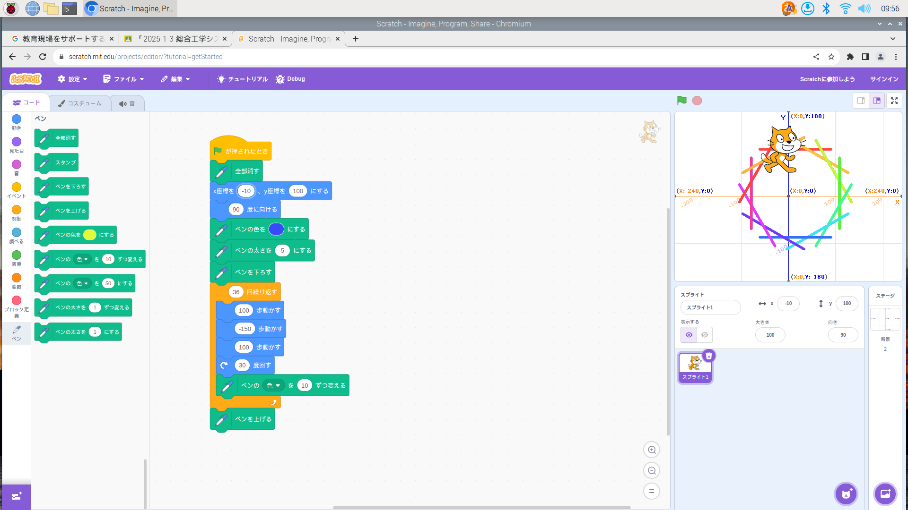
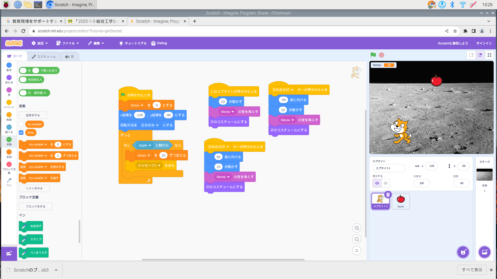

1週目のレポート ： 公大高専１年実習I-1
3a班5番 8823-IS
第1週目
1-1 サイエンスアート

1.内容
Scratchを使い、猫の座標を決め、その場で角度を変えて拡張機能でペンを追加し猫のあとをペンで書く、円を書く、色々な図形を作ることを学習した。
2.感想
Scratchでこのような線や図形を描けるんだと思いびっくりしました。マイクロビットより簡単にプログラムをできるんだと思いました。
1-2 ゲーム

1.内容
猫は左と右しか移動しないようにしたあとに、リンゴを回収するようにプログラムする。
リンゴは上から落ちてくるようにしてからそのまま下にし落ちてくるようにする。そして速さはランダムにする。
背景を追加し、点数化する。
2.感想
ゲームを自分の手でも作れるんだと思いました。やっている人は簡単にするけどこんなにプログラムをするんだと思いました。ゲームをプログラムする人たちはすごいなと思いました。
1-3 ホームページ作成
私のホームページ
1.内容
Githubにサインインした後に、ホームページを編集するためにindex.htmlをクリックしペンマークを押して編集する。そしてホームページに飛び確認する。
2.感想
こんな風にホームページがかけるんだと思い、すごいなと思いました。書くだけでも難しい作業をするのかなと思ったけれど案外簡単だなと思いました。
各ページへのリンク
1週目のレポート
2週目のレポート
3週目のレポート
私のホームページ